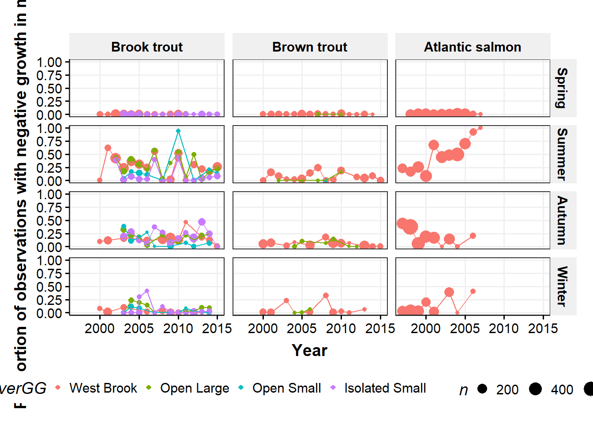
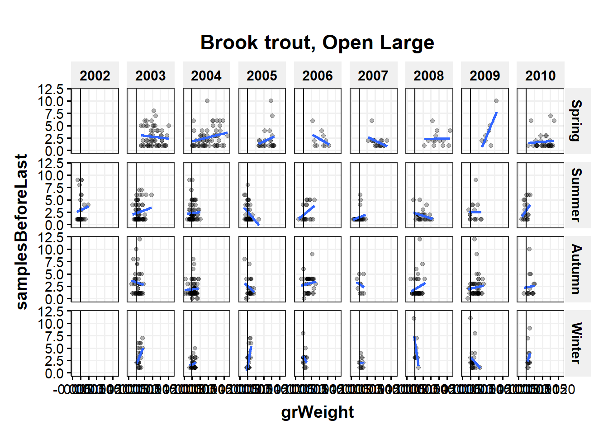

15 Growth in mass
Distribution of growth, negative growth
- Seasonal differences
- Species differences in size/growth/CF - Patterns of negative growth
Causes of neg growth
- Extrinsic
- river, season, flow, temp
- intrinsic
- Sex (fall), life history, section, size, age, previous growth (CF?), movement (section/river)
consequences of neg growth - survival
- future growth (length and mass)
- movement (section/river)
- reprod success?
- local density (con and hetero)
Probs with growth in mass
spawning loss mass in the fall, esp in OB
Interaction between flow:temp, diff btw WB (groundwater dominated at low flow so cold) and tribs (combo of surface and gw?)
Compare growth with t/f cycle diagrams for each river
compare condition factor among species - looks like bkt growing faster in weight
flow/temp circles with gr on top
15.1 Get data
15.1.1 Get electrofishing data
Code
library(targets)
cd <- tar_read(cdWB_electro_target) # raw data
cd1 <- tar_read(cd1_target) # from modelGrowthInMass_target
propNegSRS <- tar_read(propNegSRS_target)
propNegSRsN <- tar_read(propNegSRsN_target)
indCountsBySpp <- tar_read(indCountsBySpp_target)
indCounts <- tar_read(indCounts_target)
propNegLabels <- tar_read(propNegLabels_target)
negGr_beforeLast <- tar_read(negGr_beforeLast_target)
meanNegSRsN <- tar_read(meanNegSRsN_target)
meanNegSRsNWide <- tar_read(meanNegSRsNWide_target)
# df for pairs plots
cd1Wide_grWeight <- tar_read(cd1Wide_grWeight_target)
cd1Wide_observedWeight <- tar_read(cd1Wide_observedWeight_target)
dGAM <- tar_read(dGAM_target) # from modelGrowthInMass_target15.1.2 Get environmental data
Code
library(targets)
dummy=0 # change to force cache update??
envIn <- tar_read(envIn_target)
envIn_propNeg <- tar_read(envIn_propNeg_target)15.2 Examine raw data
15.2.1 Limit data to consecutive sample captures (cd1)
Previous growth models with length used all possible observations for a fish and interpolated missing observations. Here, we are just looking at consecutive captures to estimate growth over just that interval.
Code
# table(as.numeric(cd$sampleNumber), as.numeric(cd$lagSampleNumber), cd$season, cd$year) |>
# data.frame() |>
# filter(Freq > 0) |>
# arrange(Var1, Var2) |>
# rename(firstCapt = Var1, secondCapt = Var2, season = Var3, year = Var4) |>
# filter(year == 2010)
##### in targets
# cd1 <- cd |>
# filter(sampleNumberDiff == 1,
# tag %notin% c('1bf20ff490', '1bf20ebe4e')) |>
# mutate(negGrowth = grWeight < 0,
# month = month(date),
# dummy = 1) # change to force cache update15.2.2 Find outlier growth rates
15.2.2.1 Negative outlier growth
1bf20ebe4e and 1bf20ff490 have incorrect weights leading to very negative growth rates.
Exclude these tags in cd1_target. The rest of the quite negative growth fish seem plausible (remember we can’t account for stomach contents or egg loss).
Code
cd |>
arrange(grWeightS) |>
dplyr::select(tag, species, season, sampleNumber, lagSampleNumber, observedWeight, lagObservedWeight, grWeightS)# A tibble: 24,304 × 8
tag species season sampleNumber lagSampleNu…¹ obser…² lagOb…³ grWeig…⁴
<chr> <chr> <dbl> <dbl> <dbl> <dbl> <dbl> <dbl>
1 1bf20ebe4e bnt 3 55 56 46.5 4.3 -0.0320
2 257c67e414 bkt 3 59 60 7.3 4.4 -0.00414
3 1bf0fec291 bkt 3 27 28 2.7 1.6 -0.00409
4 1bf20ff490 bnt 2 54 55 167. 41.8 -0.00378
5 257c67b532 bnt 3 63 64 34 25.5 -0.00371
6 00088d1ad4 bnt 3 63 64 4.5 3.6 -0.00330
7 257c67db60 bnt 3 63 64 24.2 19.5 -0.00317
8 00088d0b59 bnt 3 63 64 3.7 3 -0.00314
9 414b684955 ats 3 15 16 5.7 4.3 -0.00289
10 0009f6ec56 bkt 3 75 76 3.5 2.7 -0.00288
# … with 24,294 more rows, and abbreviated variable names ¹lagSampleNumber,
# ²observedWeight, ³lagObservedWeight, ⁴grWeightS15.2.2.2 Positive outlier growth
Lots of very fast growth mostly in the spring. No clear way to exclude fish. 1c2c582218 is excluded in cd1_target because of very high growth in length.
Code
cd1 |>
arrange(desc(grWeightS)) |>
dplyr::select(tag, species, season, sampleNumber, lagSampleNumber, observedWeight, lagObservedWeight, grWeightS) |>
print(n = 10)# A tibble: 24,297 × 8
tag species season sampleNumber lagSampleNum…¹ obser…² lagOb…³ grWei…⁴
<chr> <chr> <dbl> <dbl> <dbl> <dbl> <dbl> <dbl>
1 1bf1020623 bkt 1 29 30 1.3 14.4 0.0199
2 0009f6eef4 bkt 1 77 78 2.3 10.3 0.0160
3 413f4b1845 ats 1 13 14 1.8 8.3 0.0152
4 1bf16366cf bnt 1 33 34 2 10.7 0.0142
5 410a015165 ats 1 13 14 2.1 9.3 0.0142
6 00088d2d2c bkt 1 73 74 1.8 9.2 0.0141
7 410a0f0653 ats 1 13 14 2.2 10.9 0.0138
8 1bf18b7637 bkt 1 33 34 2.5 13.2 0.0137
9 1bf20e4e30 bnt 1 53 54 2.3 12.1 0.0137
10 1bf1930917 ats 1 37 38 1.9 11.7 0.0136
# … with 24,287 more rows, and abbreviated variable names ¹lagSampleNumber,
# ²observedWeight, ³lagObservedWeight, ⁴grWeightS15.2.3 Raw length, weight data graphs
15.2.3.1 Distribution of growth rates
Code
ggplot(cd1, aes(grWeight, color = speciesGG)) +
geom_freqpoly(bins = 50) +
labs(x = "Growth in mass (/d)", y = "Frequency") +
scale_color_discrete() +
facet_wrap(~seasonGG)
Code
ggplot(cd1, aes(grLength, color = speciesGG)) +
geom_freqpoly(bins = 50) +
labs(x = "Growth in Length (mm/d)", y = "Frequency") +
scale_color_discrete() +
facet_wrap(~seasonGG)
15.2.4 Length vs weight by species
Very few outliers
Code
plotLenW <- function(d, s){
ggplot(d |> filter(species == s), aes(observedLength, observedWeight)) +
geom_point(alpha = 0.5, size = 1) +
scale_x_log10() +
scale_y_log10() +
#ggtitle(s) +
labs(x = "Length (mm)", y = "Mass (mg)") +
scale_color_discrete() +
facet_grid(riverGG~year, scales = 'free')
}Code
plotLenW(cd1, "bkt")Code
plotLenW(cd1, "bnt")
Code
plotLenW(cd1, "ats")
15.2.5 Weight vs weight at next sample
Code
plotWW <- function(d, spp){
ggplot(d |> filter(species == spp), aes(observedWeight, lagObservedWeight, color = seasonGG)) +
geom_point(alpha = 0.15) +
guides(color = guide_legend(override.aes = list(alpha = 1))) +
labs(x = "Mass (mg)", y = "Mass (mg) at next sample") +
scale_color_discrete() +
facet_wrap(~riverGG, scales = 'free')
}Code
plotWW(cd1, "bkt")
Code
plotWW(cd1, "bnt")
Code
plotWW(cd1, "ats")
15.2.6 Growth rate pairs plots
By species, all cohorts
Row and column labels in the pairs plots are ‘age’_‘season’
Code
plotPairs <- function(d0, sppIn, cohortIn, firstSamp = 1, lastSamp = 9, upperBlank = FALSE){
d <- d0 |>
filter(speciesGG == sppIn, cohort %in% cohortIn) |>
select_if(~any(!is.na(.))) |> # remove all-NA columns
filter(firstObserved != lastObserved - 1) # remove single obs fish
lowerFn <- function(data, mapping, method = "lm", ...) {
ggplot(data = data, mapping = mapping) +
geom_vline(xintercept = 0, color = 'darkgrey') +
geom_hline(yintercept = 0, color = 'darkgrey') +
geom_abline(intercept = 0, slope = 1) +
geom_smooth(aes(color = factor(cohort)), method = method, se = FALSE, ...) +
geom_point(aes(color = factor(cohort))) +
geom_smooth(color = 'black', size = 1.1, method = method, se = FALSE, ...)
}
if(upperBlank) {
out <- ggpairs(
d |>
dplyr::select(-c(speciesGG, tag, firstObserved, lastObserved)),
columns = (firstSamp+1):(lastSamp+1), # +1 to skip cohort column
lower = list(continuous = wrap(lowerFn, method = "lm")),
upper = "blank"
)
} else {
out <- ggpairs(
d |>
dplyr::select(-c(speciesGG, tag, firstObserved, lastObserved)),
columns = (firstSamp+1):(lastSamp+1), # +1 to skip cohort column
lower = list(continuous = wrap(lowerFn, method = "lm"))
)
}
return(out)
}Code
plotPairs(cd1Wide_grWeight, "Brook trout", 2000:2015, 1, 9)
Code
#plotPairs(cd1Wide_observedWeight, "Brook trout", 2000:2015)Code
plotPairs(cd1Wide_grWeight, "Brown trout", 2000:2015, 1, 9)
Code
#plotPairs(cd1Wide_observedWeight, "Brook trout", 2000:2015)Code
plotPairs(cd1Wide_grWeight, "Atlantic salmon", 2000:2015, 1, 8) # missing data in column 9
Code
#plotPairs(cd1Wide_observedWeight, "Atlantic salmon", 2000:2015)15.2.6.1 Brook trout by cohort
Row and column labels are ‘age’_‘season’
Color by river - make new function
Code
plotPairs(cd1Wide_grWeight, "Brook trout", 2000, 1, 8, upperBlank = TRUE)
Code
plotPairs(cd1Wide_grWeight, "Brook trout", 2001, upperBlank = TRUE)
Code
plotPairs(cd1Wide_grWeight, "Brook trout", 2002, 1, 9, upperBlank = TRUE)
Code
plotPairs(cd1Wide_grWeight, "Brook trout", 2003, upperBlank = TRUE)
Code
plotPairs(cd1Wide_grWeight, "Brook trout", 2004, upperBlank = TRUE)
Code
plotPairs(cd1Wide_grWeight, "Brook trout", 2005, upperBlank = TRUE)
Code
plotPairs(cd1Wide_grWeight, "Brook trout", 2006, upperBlank = TRUE)
Code
plotPairs(cd1Wide_grWeight, "Brook trout", 2007, upperBlank = TRUE)
Code
plotPairs(cd1Wide_grWeight, "Brook trout", 2008, upperBlank = TRUE)
Code
plotPairs(cd1Wide_grWeight, "Brook trout", 2009, upperBlank = TRUE)
Code
plotPairs(cd1Wide_grWeight, "Brook trout", 2010, 1, 8, upperBlank = TRUE)
Code
plotPairs(cd1Wide_grWeight, "Brook trout", 2011, 1, 7, upperBlank = TRUE)
Code
plotPairs(cd1Wide_grWeight, "Brook trout", 2012, upperBlank = TRUE)
Code
plotPairs(cd1Wide_grWeight, "Brook trout", 2013, upperBlank = TRUE)
Code
plotPairs(cd1Wide_grWeight, "Brook trout", 2014, 1, 5, upperBlank = TRUE)
15.2.6.2 Consecutive season growth comparisons by age_season
Brook trout
Code
ggplot(cd1Wide_grWeight |> filter(speciesGG == "Brook trout", cohort %in% 2000:2014, `0_4` < 0.01), aes(`0_3`, `0_4`, color = factor(cohort))) +
geom_point() +
geom_vline(xintercept = 0, color = 'darkgrey') +
geom_hline(yintercept = 0, color = 'darkgrey') +
#geom_abline(intercept = 0, slope = 1) +
geom_smooth(method = "lm", se = FALSE, color = '#45454d') +
guides(colour = FALSE) +
facet_wrap(~cohort)
Code
ggplot(cd1Wide_grWeight |> filter(speciesGG == "Brook trout", cohort %in% 2000:2014), aes(`0_4`, `1_1`, color = factor(cohort))) +
geom_point() +
geom_vline(xintercept = 0, color = 'darkgrey') +
geom_hline(yintercept = 0, color = 'darkgrey') +
#geom_abline(intercept = 0, slope = 1) +
geom_smooth(method = "lm", se = FALSE, color = '#45454d') +
guides(colour = FALSE) +
facet_wrap(~cohort)
Code
ggplot(cd1Wide_grWeight |> filter(speciesGG == "Brook trout", cohort %in% 2000:2014), aes(`1_1`, `1_2`, color = factor(cohort))) +
geom_point() +
geom_vline(xintercept = 0, color = 'darkgrey') +
geom_hline(yintercept = 0, color = 'darkgrey') +
#geom_abline(intercept = 0, slope = 1) +
geom_smooth(method = "lm", se = FALSE) +
guides(colour = FALSE) +
facet_wrap(~cohort)
Code
ggplot(cd1Wide_grWeight |> filter(speciesGG == "Brook trout", cohort %in% 2000:2014), aes(`1_2`, `1_3`, color = factor(cohort))) +
geom_point() +
geom_vline(xintercept = 0, color = 'darkgrey') +
geom_hline(yintercept = 0, color = 'darkgrey') +
#geom_abline(intercept = 0, slope = 1) +
geom_smooth(method = "lm", se = FALSE, color = '#45454d') +
guides(colour = FALSE) +
facet_wrap(~cohort)
Code
ggplot(cd1Wide_grWeight |> filter(speciesGG == "Brook trout", cohort %in% 2000:2012), aes(`1_1`, `2_1`, color = factor(cohort))) +
geom_point() +
geom_vline(xintercept = 0, color = 'darkgrey') +
geom_hline(yintercept = 0, color = 'darkgrey') +
geom_abline(intercept = 0, slope = 1) +
geom_smooth(method = "lm", se = FALSE, color = '#45454d') +
guides(colour = FALSE) +
facet_wrap(~cohort)
15.2.7 Growth rate in length vs growth rate in mass
Code
ggplot(cd1, aes(grLength, grWeight)) +
geom_point(aes(size = observedWeight), alpha = 0.02) +
guides(size = guide_legend(override.aes = list(alpha = 1))) +
labs(x = "Growth in length", y = "Growth in mass") +
scale_color_discrete() +
facet_grid(seasonGG~speciesGG)
Code
plotGrLenMass <- function(d, s){
ggplot(cd1 |> filter(species==s), aes(grLength, grWeight, color = factor(year))) +
geom_point(alpha = 0.5) +
geom_smooth(method="lm", se=FALSE) +
guides(size = guide_legend(override.aes = list(alpha = 1))) +
labs(x = "Growth in length", y = "Growth in mass") +
scale_color_discrete() +
facet_wrap(~seasonGG, scales = 'free')
}
# facet_wrap(~year)Code
plotGrLenMass(cd1, "bkt")
Code
plotGrLenMass(cd1, "bnt")
Code
plotGrLenMass(cd1, "ats")
No relationship between means of neg and pos growth
Code
ggplot(meanNegSRsN |> filter(speciesGG == "Brook trout"), aes(year, meanNegPos, color = negGrowth, group = negGrowth)) +
geom_point() +
geom_line() +
geom_hline(yintercept = 0) +
facet_grid(seasonGG~riverGG)
Code
ggplot(meanNegSRsNWide, aes(`FALSE`, `TRUE`)) +
geom_point() +
geom_smooth(method = "lm", se = FALSE) +
facet_grid(seasonGG~riverGG)
15.3 Flow and temperature growth relationships
15.3.1 Mean flow effect on growth?
Code
plotFlowGR <- function(d, r){
ggplot(d |> filter(river == r), aes(meanFlowByRiver, grWeight, color = speciesGG)) +
geom_point(alpha = 0.05) +
geom_smooth(method = "lm", se = FALSE) +
geom_smooth(se = FALSE) +
geom_smooth(method = "lm", se =FALSE, formula = y~poly(x,2)) +
labs(x = "Mean flow", y = "Growth in mass") +
scale_color_discrete() +
#ggtitle(r) +
facet_grid(seasonGG~speciesGG)#, scales = 'free')
}Code
plotFlowGR(cd1, "west brook")
Code
plotFlowGR(cd1, "wb jimmy")
Code
plotFlowGR(cd1, "wb mitchell")
Code
plotFlowGR(cd1, "wb obear")
15.3.2 Mean temperature effect on growth?
Maybe in Jimmy for bnt, or for ats
Code
plotTempGR <- function(d, s){
ggplot(d |> filter(seasonGG == s), aes(meanTemperature, grWeight, color = speciesGG)) +
geom_point(alpha = 0.5) +
geom_smooth(method = "lm", se = FALSE, color = 'darkgrey') +
geom_smooth(se = FALSE, color = 'darkgrey') +
geom_smooth(method = "lm", se =FALSE, formula = y~poly(x,2), color = 'darkgrey') +
labs(x = "Mean temperature (c)", y = "Growth in mass") +
scale_color_discrete() +
# ggtitle(s) +
facet_grid(speciesGG~riverGG)#, scales = 'free')
}Code
plotTempGR(cd1, "Spring")
Code
plotTempGR(cd1, "Summer")
Code
plotTempGR(cd1, "Autumn")
Code
plotTempGR(cd1, "Winter")
15.4 Proportion of fish with negative growth
15.4.1 Proportion of fish with negative growth by species/river/season
Code
ggplot(cd1 |> filter(!is.na(negGrowth)), aes(negGrowth)) +
geom_bar() +
facet_grid(seasonGG~speciesGG+riverGG, scales = "free")
15.4.2 Proportion of fish with negative growth by species/season
Code
ggplot(propNegSRS |> filter(n > 50), aes(seasonGG, propNeg, color = riverGG, group = riverGG)) +
geom_point(aes(size = n)) +
geom_line() +
labs(x = "Season", y = "Proportion of fish with negative growth in mass") +
scale_color_discrete() +
facet_wrap(~speciesGG)
15.4.3 Proportion of fish with negative growth by species/river/year
Code
plotPropNegByRiver <- function(d, spp){
ggplot(d |> filter(n > 10, speciesGG == spp),
aes(year, propNeg, color = factor(seasonGG))) +
geom_point(aes(size = n)) +
geom_line() +
labs(x = "Year", y = "Proportion of fish with negative growth in mass") +
scale_color_discrete() +
facet_wrap(~riverGG)
}Code
plotPropNegByRiver(propNegSRsN, "Brook trout")
Code
plotPropNegByRiver(propNegSRsN |> filter(riverGG != "Open Small"), "Brown trout")
Code
plotPropNegByRiver(propNegSRsN, "Atlantic salmon")
15.4.4 Proportion of fish with negative growth by species/river/year
Break down season by year, compare across rivers
Code
ggplot(propNegSRsN |> filter(n > 10), aes(year, propNeg, color = riverGG)) +
geom_point(aes(size = n)) +
geom_line() +
labs(x = "Year", y = "Proportion of fish with negative growth in mass") +
scale_color_discrete() +
facet_grid(seasonGG~speciesGG)
15.5 Environmental effects on proportion of fish with negative growth
15.5.1 Proportion of fish with negative growth by flow
Code
ggplot(propNegSRsN |> filter(n > 10, riverGG == "West Brook"), aes(mF, propNeg, color = riverGG)) +
geom_point(aes(size = n)) +
geom_smooth(method = "lm", se = FALSE) +
scale_y_continuous("Proportion of fish with negative growth in mass") +
scale_x_log10("Mean flow") +
scale_color_discrete() +
ggtitle("West Brook") +
facet_grid(seasonGG~speciesGG)
Code
ggplot(propNegSRsN |> filter(n > 10, riverGG != "West Brook"), aes(mF, propNeg, color = riverGG)) +
geom_point(aes(size = n)) +
geom_smooth(method = "lm", se = FALSE) +
scale_y_continuous("Proportion of fish with negative growth in mass") +
scale_x_log10("Mean flow") +
scale_color_discrete() +
ggtitle("Tributaries") +
facet_grid(seasonGG~speciesGG)
15.5.2 Proportion of fish with negative growth by temperature
Code
plotNegGrowth_temp <- function(d, s){
ggplot(d |> filter(n > 10, seasonGG == s), aes(mT, propNeg, color = riverGG)) +
geom_point(aes(size = n)) +
geom_smooth(method = "lm", se = FALSE) +
scale_y_continuous("Proportion of fish with negative growth in mass") +
scale_x_continuous("Mean temperature (C)") +
scale_color_discrete() +
ggtitle(s) +
facet_grid(riverGG~speciesGG)
}Code
plotNegGrowth_temp(propNegSRsN, "Spring")
Code
plotNegGrowth_temp(propNegSRsN, "Summer")
Code
plotNegGrowth_temp(propNegSRsN, "Autumn")
Code
plotNegGrowth_temp(propNegSRsN, "Winter")
15.5.3 Proportion of fish with negative growth by 3 species fish counts
Code
ggplot(propNegSRsN |> filter(n > 10, riverGG == "West Brook"), aes(nInd, propNeg, color = riverGG)) +
geom_point(aes(size = n)) +
geom_smooth(method = "lm", se = FALSE) +
scale_y_continuous("Proportion of fish with negative growth in mass") +
scale_x_log10("3 species count") +
scale_color_discrete() +
ggtitle("West Brook") +
facet_grid(seasonGG~speciesGG)
Code
ggplot(propNegSRsN |> filter(n > 10, riverGG != "West Brook"), aes(nInd, propNeg, color = riverGG)) +
geom_point(aes(size = n)) +
geom_smooth(method = "lm", se = FALSE) +
scale_y_continuous("Proportion of fish with negative growth in mass") +
scale_x_log10("3 species count") +
scale_color_discrete() +
ggtitle("Tributaries") +
facet_grid(seasonGG~speciesGG)
15.5.4 Proportion of fish with negative growth by conspecific fish counts
Code
ggplot(propNegSRsN |> filter(n > 10, riverGG == "West Brook"), aes(nIndBySpp, propNeg, color = riverGG)) +
geom_point(aes(size = n)) +
geom_smooth(method = "lm", se = FALSE) +
scale_y_continuous("Proportion of fish with negative growth in mass") +
scale_x_log10("conspecific count") +
scale_color_discrete() +
ggtitle("West Brook") +
facet_grid(seasonGG~speciesGG)
Code
ggplot(propNegSRsN |> filter(n > 10, riverGG != "West Brook"), aes(nIndBySpp, propNeg, color = riverGG)) +
geom_point(aes(size = n)) +
geom_smooth(method = "lm", se = FALSE) +
scale_y_continuous("Proportion of fish with negative growth in mass") +
scale_x_log10("conspecific count") +
scale_color_discrete() +
ggtitle("Tributaries") +
facet_grid(seasonGG~speciesGG)
15.6 F/T cycle graphs
15.6.1 Mean flow and temperature
Code
plot_mT_mF <- function(d, s, plotText){
ggplot(d |> filter(n > 25, speciesGG == s), aes(mT, mF_log10, color = factor(seasonGG))) +
geom_point(aes(size = propNeg)) +
{if(plotText) geom_text(aes(label = year), vjust = 0, nudge_y = -0.075, check_overlap = FALSE, size = 3)} +
labs(x = "Mean temperature (C)", y = "log10 of mean Flow") +
scale_color_discrete() +
facet_wrap(~riverGG, scales = "free")
}Code
plot_mT_mF(propNegSRsN, "Brook trout", FALSE)
Code
plot_mT_mF(propNegSRsN, "Brown trout", FALSE)
Code
plot_mT_mF(propNegSRsN, "Atlantic salmon", FALSE)
15.6.2 Mean flow and temperature with year labels
15.6.2.1 panel-tabset
15.6.3 Brook trout
Code
plot_mT_mF(propNegSRsN, "Brook trout", TRUE)
15.6.3.1 Brown trout
Code
plot_mT_mF(propNegSRsN, "Brown trout", TRUE)
15.6.3.2 Atlantic salmon
Code
plot_mT_mF(propNegSRsN, "Atlantic salmon", TRUE)
:::
Mean flow and temperature values for each season and year for the West Brook
Not very informative
Code
ggplot(propNegSRsN |> filter(n > 10, riverGG == 'West Brook') |> arrange(riverGG, speciesGG, year, seasonGG), aes(mT, mF_log10)) +
geom_line() +
geom_point(aes(color = factor(seasonGG))) +
facet_wrap(~year)
15.6.4 Yearly temperature/flow cycles of daily data
Code
plotMerged <- function(d, r, minYear = 2000, maxYear = 2017){
ggplot(d |> filter(riverGG == r, year %in% c(minYear:maxYear)),
aes(temperature, log10(flowByRiverm3s), color = seasonGG, group = seasonGG)) +
geom_point() +
geom_smooth(se = FALSE) +
#geom_line() +
labs(x = "Temperature (C)", y = "log10 of Flow") +
scale_color_discrete() +
ggtitle(r) +
facet_wrap(~year, scales = 'free')
}
# this plots f/t for all three species - good for filling in gapsCode
plotMerged(envIn_propNeg, "West Brook", 2000, 2017)
Code
plotMerged(envIn_propNeg, "Open Large", 2002, 2017)
Code
plotMerged(envIn_propNeg, "Open Small", 2002, 2017)
Code
plotMerged(envIn_propNeg, "Isolated Small", 2002, 2017)15.6.5 Smooths of temperature/flow cycles of daily data by season
Code
plotMergedBySeason <- function(d, r, minYear = 2000, maxYear = 2017) {
ggplot(d |> filter(riverGG == r, year %in% c(minYear:maxYear), !is.na(seasonGG)),
aes(temperature, log10(flowByRiverm3s),
color = factor(year), group = year
)
) +
#geom_point() +
geom_smooth(se = FALSE) +
labs(x = "Temperature (C)", y = "log10 of Flow") +
scale_color_discrete() +
ggtitle(r) +
facet_wrap(~seasonGG, scales = 'free')
}Code
plotMergedBySeason(envIn_propNeg, "West Brook", 2000, 2017)
Code
plotMergedBySeason(envIn_propNeg, "Open Large", 2002, 2017)
Code
plotMergedBySeason(envIn_propNeg, "Open Small", 2002, 2017)
Code
plotMergedBySeason(envIn_propNeg, "Isolated Small", 2002, 2017)
TO ADD: low flow high density important? Look at interaction btw flow:density
15.6.6 F/T cycles with labels
Plot F/T cycles by river, season, species with label for propNeg and conspecific and all-species abundances
Code
plotMergedBySeasonByEverything <- function(d, d2, r, s, spp, minYear = 2000, maxYear = 2017){
ggplot(d |>
filter(riverGG == r,
year %in% c(minYear:maxYear),
!is.na(seasonGG),
seasonGG == s,
speciesGG == spp),
aes(temperature, log10(flowByRiverm3s))
) +
geom_smooth(se = FALSE, color = "darkgrey") +
geom_point(aes(color = yday)) +
geom_text(aes(
x = minTemp + 3.0,
y = log10(minFlow) - 1,
label = paste("propNeg=",round(propNeg, 2))
#size = propNeg
),
data = d2|>
filter(riverGG == r,
year %in% c(minYear:maxYear),
seasonGG == s,
speciesGG == spp)
) +
geom_text(aes(
x = minTemp + 3.0,
y = log10(minFlow) - 0.3,
label = paste(paste("nIndAllSpp=", nInd), paste("nIndBySpp=", nIndBySpp), sep = "\n")
),
data = d2|>
filter(riverGG == r,
year %in% c(minYear:maxYear),
seasonGG == s,
speciesGG == spp)
) +
labs(x = "Temperature (c)", y = "log10 Flow") +
ggtitle(paste(r, s, spp, sep = ", ")) +
facet_wrap(~year)
}15.6.6.1 West Brook
Code
plotMergedBySeasonByEverything(envIn_propNeg, propNegLabels, "West Brook", "Spring", "Brook trout", 2000, 2017)
Code
plotMergedBySeasonByEverything(envIn_propNeg, propNegLabels, "West Brook", "Spring", "Brown trout", 2000, 2017)
Code
plotMergedBySeasonByEverything(envIn_propNeg, propNegLabels, "West Brook", "Spring", "Atlantic salmon", 2000, 2017)
Code
plotMergedBySeasonByEverything(envIn_propNeg, propNegLabels, "West Brook", "Summer", "Brook trout", 2000, 2017)
Code
plotMergedBySeasonByEverything(envIn_propNeg, propNegLabels, "West Brook", "Summer", "Brown trout", 2000, 2017)
Code
plotMergedBySeasonByEverything(envIn_propNeg, propNegLabels, "West Brook", "Summer", "Atlantic salmon", 2000, 2017)
Code
plotMergedBySeasonByEverything(envIn_propNeg, propNegLabels, "West Brook", "Autumn", "Brook trout", 2000, 2017)
Code
plotMergedBySeasonByEverything(envIn_propNeg, propNegLabels, "West Brook", "Autumn", "Brown trout", 2000, 2017)
Code
plotMergedBySeasonByEverything(envIn_propNeg, propNegLabels, "West Brook", "Autumn", "Atlantic salmon", 2000, 2017)
Code
plotMergedBySeasonByEverything(envIn_propNeg, propNegLabels, "West Brook", "Winter", "Brook trout", 2000, 2017)
Code
plotMergedBySeasonByEverything(envIn_propNeg, propNegLabels, "West Brook", "Winter", "Brown trout", 2000, 2017)
Code
plotMergedBySeasonByEverything(envIn_propNeg, propNegLabels, "West Brook", "Winter", "Atlantic salmon", 2000, 2017)
15.6.6.2 Open Large
Code
plotMergedBySeasonByEverything(envIn_propNeg, propNegLabels, "Open Large", "Spring", "Brook trout", 2000, 2017)
Code
plotMergedBySeasonByEverything(envIn_propNeg, propNegLabels, "Open Large", "Spring", "Brown trout", 2000, 2017)
Code
plotMergedBySeasonByEverything(envIn_propNeg, propNegLabels, "Open Large", "Spring", "Atlantic salmon", 2000, 2017)
Code
plotMergedBySeasonByEverything(envIn_propNeg, propNegLabels, "Open Large", "Summer", "Brook trout", 2000, 2017)
Code
plotMergedBySeasonByEverything(envIn_propNeg, propNegLabels, "Open Large", "Summer", "Brown trout", 2000, 2017)
Code
plotMergedBySeasonByEverything(envIn_propNeg, propNegLabels, "Open Large", "Summer", "Atlantic salmon", 2000, 2017)
Code
plotMergedBySeasonByEverything(envIn_propNeg, propNegLabels, "Open Large", "Autumn", "Brook trout", 2000, 2017)
Code
plotMergedBySeasonByEverything(envIn_propNeg, propNegLabels, "Open Large", "Autumn", "Brown trout", 2000, 2017)
Code
plotMergedBySeasonByEverything(envIn_propNeg, propNegLabels, "Open Large", "Autumn", "Atlantic salmon", 2000, 2017)Code
plotMergedBySeasonByEverything(envIn_propNeg, propNegLabels, "Open Large", "Winter", "Brook trout", 2000, 2017)
Code
plotMergedBySeasonByEverything(envIn_propNeg, propNegLabels, "Open Large", "Winter", "Brown trout", 2000, 2017)
Code
plotMergedBySeasonByEverything(envIn_propNeg, propNegLabels, "Open Large", "Winter", "Atlantic salmon", 2000, 2017)
15.6.6.3 Open Small
Code
plotMergedBySeasonByEverything(envIn_propNeg, propNegLabels, "Open Small", "Spring", "Brook trout", 2000, 2017)
Code
plotMergedBySeasonByEverything(envIn_propNeg, propNegLabels, "Open Small", "Spring", "Brown trout", 2000, 2017)
Code
plotMergedBySeasonByEverything(envIn_propNeg, propNegLabels, "Open Small", "Summer", "Brook trout", 2000, 2017)
Code
plotMergedBySeasonByEverything(envIn_propNeg, propNegLabels, "Open Small", "Summer", "Brown trout", 2000, 2017)
Code
plotMergedBySeasonByEverything(envIn_propNeg, propNegLabels, "Open Small", "Autumn", "Brook trout", 2000, 2017)
Code
plotMergedBySeasonByEverything(envIn_propNeg, propNegLabels, "Open Small", "Autumn", "Brown trout", 2000, 2017)
Code
plotMergedBySeasonByEverything(envIn_propNeg, propNegLabels, "Open Small", "Winter", "Brook trout", 2000, 2017)
Code
plotMergedBySeasonByEverything(envIn_propNeg, propNegLabels, "Open Small", "Winter", "Brown trout", 2000, 2017)
15.6.6.4 Isolated Small
Code
plotMergedBySeasonByEverything(envIn_propNeg, propNegLabels, "Isolated Small", "Spring", "Brook trout", 2000, 2017)
Code
plotMergedBySeasonByEverything(envIn_propNeg, propNegLabels, "Isolated Small", "Summer", "Brook trout", 2000, 2017)
Code
plotMergedBySeasonByEverything(envIn_propNeg, propNegLabels, "Isolated Small", "Autumn", "Brook trout", 2000, 2017)
Code
plotMergedBySeasonByEverything(envIn_propNeg, propNegLabels, "Isolated Small", "Winter", "Brook trout", 2000, 2017)
15.7 Consequences of negative growth
15.7.1 Growth and last observation
Relationship between individual growth and length of subsequent observations (how many more observations before the last observatoin) for individual fish.
Code
plotGrowthSamplesLeft <- function(d, spp, r){
ggplot(d |> filter(speciesGG == spp, riverGG == r, year < 2011, samplesBeforeLast >= 0), aes(grWeight, samplesBeforeLast)) +
geom_point(alpha = 0.3) +
geom_smooth(method = "lm", se = FALSE) +
geom_vline(xintercept = 0) +
ggtitle(paste(spp, r, sep = ", ")) +
facet_grid(seasonGG~year)
}
plotGrowthSamplesLeft(cd1, "Brook trout", "West Brook")
Code
plotGrowthSamplesLeft(cd1, "Brook trout", "Open Large")
Code
plotGrowthSamplesLeft(cd1, "Brook trout", "Open Small")
Code
plotGrowthSamplesLeft(cd1, "Brook trout", "Isolated Small")
Code
plotGrowthSamplesLeft(cd1, "Brown trout", "West Brook")
Code
plotGrowthSamplesLeftNoYear <- function(d, spp, r){
ggplot(d |> filter(speciesGG == spp, riverGG == r, year < 2011, samplesBeforeLast >= 0), aes(grWeight, samplesBeforeLast)) +
geom_point(alpha = 0.3) +
geom_smooth(method = "lm", se = FALSE) +
geom_vline(xintercept = 0) +
ggtitle(paste(spp, r, sep = ", ")) +
labs(x = "Individual growth in mass", y = "Number of samples before last observation") +
facet_wrap(~seasonGG)
}
plotGrowthSamplesLeftNoYear(cd1, "Brook trout", "West Brook")
Code
plotGrowthSamplesLeftNoYear(cd1, "Brook trout", "Open Large")
Code
plotGrowthSamplesLeftNoYear(cd1, "Brook trout", "Open Small")
Code
plotGrowthSamplesLeftNoYear(cd1, "Brook trout", "Isolated Small")
Code
plotGrowthSamplesLeftNoYear(cd1, "Brown trout", "West Brook")Code
plotGrowthSamplesLeftNoYear(cd1, "Atlantic salmon", "West Brook")
Code
plotGR_sampsBL <- function(d, spp, r) {
ggplot(d |> filter(n > 5, speciesGG %in% spp, riverGG %in% r), aes(meanGR, samplesBeforeLast, color = negGrowth)) +
geom_point() +
geom_smooth(method = "lm", se = FALSE) +
ggtitle(paste(spp, r, sep = ", ")) +
labs(x = "Individual growth in mass", y = "Number of samples before last observation") +
facet_grid(speciesGG~seasonGG+riverGG, scales = "free")
}
plotGR_sampsBL(negGr_beforeLast, c("Brook trout","Brown trout", "Atlantic salmon"), c("West Brook", "Open Large"))
Code
plotGR_sampsBL2 <- function(d, spp, r) {
ggplot(d |> filter(n > 5, speciesGG %in% spp, riverGG %in% r), aes(meanGR, samplesBeforeLast, color = speciesGG)) +
geom_point() +
geom_smooth(method = "lm", se = FALSE) +
scale_color_discrete() +
ggtitle(paste(spp, r, sep = ", ")) +
labs(x = "Individual growth in mass", y = "Number of samples before last observation") +
facet_grid(riverGG~negGrowth+seasonGG, scales = "free")
}
plotGR_sampsBL2(negGr_beforeLast, c("Brook trout","Brown trout", "Atlantic salmon"), c("West Brook", "Open Large"))
Code
plotGR_sampsBL3 <- function(d, spp, r, ng) {
ggplot(d |> filter(n > 5, speciesGG %in% spp, riverGG %in% r, negGrowth %in% ng), aes(meanGR, samplesBeforeLast, color = speciesGG)) +
geom_point() +
geom_smooth(method = "lm", se = FALSE) +
scale_color_discrete() +
ggtitle(paste(spp, r, ng, sep = ", ")) +
labs(x = "Individual growth in mass", y = "Number of samples before last observation") +
facet_wrap(negGrowth~seasonGG, scales = "free")
}
plotGR_sampsBL3(negGr_beforeLast, c("Brook trout","Brown trout", "Atlantic salmon"), c("West Brook"), FALSE)
Code
plotGR_sampsBL3(negGr_beforeLast, c("Brook trout","Brown trout", "Atlantic salmon"), c("West Brook"), TRUE)
TO ADD: mean samplesBeforeLast by negGR TO ADD: knownZ=0 vs knownZ==1, growth in previous interval
Code
# cd1_target |>
# group_by(speciesGG, riverGG, seasonGG, samplesBeforeLast, negGrowth) |> 15.7.2 Growth and movement distance
TO add: break avg move into negGR/not negGR
Code
plotGR_moveDist <- function(d, spp, r) {
ggplot(d |> filter(speciesGG %in% spp, riverGG %in% r), aes(grWeight, distMoved, color = speciesGG)) +
geom_point(alpha = 0.2) +
geom_smooth(method = "lm", se = FALSE, color = 'darkgrey') +
scale_color_discrete() +
ggtitle(paste(spp, r, sep = ", ")) +
labs(x = "Individual growth in mass", y = "Movement distance") +
facet_grid(speciesGG~seasonGG, scales = "free")
}
plotGR_moveDist(cd1, c("Brook trout","Brown trout","Atlantic salmon"), c("West Brook"))
Code
plotGR_moveDist2 <- function(d, spp, r) {
ggplot(d |> filter(speciesGG %in% spp, riverGG %in% r), aes(grWeight, distMoved, color = speciesGG)) +
geom_point(alpha = 0.2) +
geom_smooth(method = "lm", se = FALSE, color = 'darkgrey') +
scale_color_discrete() +
ggtitle(paste(spp, r, sep = ", ")) +
labs(x = "Individual growth in mass", y = "Movement distance") +
facet_grid(riverGG~seasonGG, scales = "free")
}
plotGR_moveDist2(cd1, c("Brook trout"), c("West Brook", "Open Large", "Open Small", "Isolated Small"))
Code
plotGR_moveDist2(cd1, c("Brown trout"), c("West Brook", "Open Large", "Open Small"))
15.8 Machine Learning models
Using xgBoost to explore patterns in:
- Binary, lose mass:gain mass
- Regression, growth in mass
15.8.1 Binary model with negative growth, yes:no
Not yet in targets….
Code
# http://uc-r.github.io/gbm_regression
dML <- cd1 |>
filter(speciesGG == "Brook trout", !is.na(grWeight)) |>
mutate(age = year - cohort) |>
dplyr::select(riverGG, seasonGG, observedWeight, cohort, age, meanTemperature, meanFlowByRiver, negGrowth)
# variable names
features <- setdiff(names(dML), "negGrowth")
# Create the treatment plan from the training data
treatplan <- vtreat::designTreatmentsZ(dML, features, verbose = FALSE)
# Get the "clean" variable names from the scoreFrame
new_vars <- treatplan %>%
magrittr::use_series(scoreFrame) %>%
dplyr::filter(code %in% c("clean", "lev")) %>%
magrittr::use_series(varName)
# Prepare the training data
features_train <- vtreat::prepare(treatplan, dML, varRestriction = new_vars) %>% as.matrix()
response_train <- dML$negGrowth
# Prepare the test data
features_test <- vtreat::prepare(treatplan, dML, varRestriction = new_vars) %>% as.matrix()
response_test <- dML$negGrowth
# dimensions of one-hot encoded data
dim(features_train)[1] 10089 13Code
dim(features_test)[1] 10089 1315.8.1.1 Run first model
Code
# reproducibility
set.seed(123)
xgb.fit1 <- xgb.cv(
data = features_train,
label = response_train,
nrounds = 10000,
nfold = 5,
objective = "binary:logistic", #"reg:linear", # for regression models
verbose = 0, # silent,
early_stopping_rounds = 15 # stop if no improvement for 10 consecutive trees
)
# get number of trees that minimize error
xgb.fit1$evaluation_log %>%
dplyr::summarise(
ntrees.train = which(train_logloss_mean == min(train_logloss_mean))[1],
logloss.train = min(train_logloss_mean),
ntrees.test = which(test_logloss_mean == min(test_logloss_mean))[1],
logloss.test = min(test_logloss_mean),
) ntrees.train logloss.train ntrees.test logloss.test
1 44 0.1802105 29 0.2506292Code
# plot error vs number trees
ggplot(xgb.fit1$evaluation_log) +
geom_line(aes(iter, train_logloss_mean), color = "red") +
geom_line(aes(iter, test_logloss_mean), color = "blue")
15.8.1.2 Add early stopping
Code
## tune the model
# create parameter list
params <- list(
eta = .1,
max_depth = 5,
min_child_weight = 2,
subsample = .8,
colsample_bytree = .9
)
xgb.fit2 <- xgb.cv(
params = params,
data = features_train,
label = response_train,
nrounds = 20000,
nfold = 5,
objective = "binary:logistic", #"reg:linear", # for regression models
verbose = 0, # silent,
early_stopping_rounds = 10 # stop if no improvement for 10 consecutive trees
)
xgb.fit2$evaluation_log %>%
dplyr::summarise(
ntrees.train = which(train_logloss_mean == min(train_logloss_mean))[1],
logloss.train = min(train_logloss_mean),
ntrees.test = which(test_logloss_mean == min(test_logloss_mean))[1],
logloss.test = min(test_logloss_mean),
) ntrees.train logloss.train ntrees.test logloss.test
1 128 0.201228 118 0.247713Code
# plot error vs number trees
ggplot(xgb.fit2$evaluation_log) +
geom_line(aes(iter, train_logloss_mean), color = "red") +
geom_line(aes(iter, test_logloss_mean), color = "blue")
15.8.1.3 Hyperparameter search grid
Code
# create hyperparameter grid
hyper_grid <- expand.grid(
eta = c(.01, .05, .1, .3),
max_depth = c(1, 3, 5, 7),
min_child_weight = c(1, 3, 5, 7),
subsample = c(.65, .8, 1),
colsample_bytree = c(.8, .9, 1),
optimal_trees = 0, # a place to dump results
min_RMSE = 0 # a place to dump results
)
nrow(hyper_grid)[1] 576Code
# reproducibility
set.seed(123)
#
# # grid search
# for(i in 1:nrow(hyper_grid)) {
# print(i)
# # create parameter list
# params <- list(
# eta = hyper_grid$eta[i],
# max_depth = hyper_grid$max_depth[i],
# min_child_weight = hyper_grid$min_child_weight[i],
# subsample = hyper_grid$subsample[i],
# colsample_bytree = hyper_grid$colsample_bytree[i]
# )
#
#
# # train model
# xgb.tune <- xgb.cv(
# params = params,
# data = features_train,
# label = response_train,
# nrounds = 5000,
# nfold = 5,
# objective = "binary:logistic", #"reg:linear", # for regression models
# verbose = 0, # silent,
# early_stopping_rounds = 20 # stop if no improvement for 10 consecutive trees
# )
#
# # add min training error and trees to grid
# hyper_grid$optimal_trees[i] <- which.min(xgb.tune$evaluation_log$test_logloss_mean)
# hyper_grid$min_RMSE[i] <- min(xgb.tune$evaluation_log$test_logloss_mean)
# }
#
# hyper_grid %>%
# dplyr::arrange(min_RMSE) %>%
# head(15)
# eta max_depth min_child_weight subsample colsample_bytree optimal_trees min_RMSE
# 1 0.01 5 1 0.80 0.8 1082 0.2464962
# 2 0.01 5 1 0.65 0.8 1042 0.2466260
# 3 0.01 5 1 0.80 0.9 1115 0.2467519
# 4 0.01 7 1 0.80 0.8 676 0.2467640
# 5 0.01 7 1 0.65 0.8 671 0.2468416
# 6 0.05 5 1 0.65 0.9 217 0.2470321
# 7 0.01 7 3 0.80 0.8 676 0.2470520
# 8 0.01 5 3 0.80 0.8 1115 0.2470706
# 9 0.01 5 3 0.80 0.9 1089 0.2470969
# 10 0.10 5 3 1.00 0.9 158 0.2471294
# 11 0.05 7 3 0.80 1.0 139 0.2471420
# 12 0.01 5 1 0.65 0.9 960 0.2471568
# 13 0.01 5 1 0.80 1.0 1023 0.2471608
# 14 0.01 7 3 0.65 0.8 671 0.2472037
# 15 0.10 5 1 0.80 0.8 95 0.247209015.8.1.4 Fit the top model
Code
# parameter list - from the top model of the grid search above
params <- list(
eta = 0.01,
max_depth = 5,
min_child_weight = 1,
subsample = 0.8,
colsample_bytree = 0.8
)
# train final model
xgb.fit.final <- xgboost(
params = params,
data = features_train,
label = response_train,
nrounds = 1082,
objective = "binary:logistic",
verbose = 0,
early_stopping_rounds = 25 # stop if no improvement for 10 consecutive trees
)15.8.1.5 Variable importance plot
Code
# create importance matrix
importance_matrix <- xgb.importance(model = xgb.fit.final)
# variable importance plot
xgb.plot.importance(importance_matrix, top_n = 10, measure = "Gain")
15.8.1.6 Partial dependence plots
Code
pW <- xgb.fit.final %>%
pdp::partial(pred.var = "observedWeight", n.trees = 1082, grid.resolution = 100, train = features_train) %>%
autoplot(rug = TRUE, train = features_train)
#scale_y_discrete() +
#ggtitle("PDP")
pFlow <- xgb.fit.final %>%
pdp::partial(pred.var = "meanFlowByRiver", n.trees = 1082, grid.resolution = 100, train = features_train) %>%
autoplot(rug = TRUE, train = features_train)
pTemp <- xgb.fit.final %>%
pdp::partial(pred.var = "meanTemperature", n.trees = 1082, grid.resolution = 100, train = features_train) %>%
autoplot(rug = TRUE, train = features_train)
pAge <- xgb.fit.final %>%
pdp::partial(pred.var = "age", n.trees = 1082, grid.resolution = 100, train = features_train) %>%
autoplot(rug = TRUE, train = features_train)
pCohort <- xgb.fit.final %>%
pdp::partial(pred.var = "cohort", n.trees = 1082, grid.resolution = 100, train = features_train) %>%
autoplot(rug = TRUE, train = features_train)
gridExtra::grid.arrange(pW, pFlow, pTemp, pAge, pCohort, nrow = 3)
15.8.1.7 Lime
Code
# get a few observations to perform local interpretation on
local_obs <- dML[1:3, ]
# one-hot encode the local observations to be assessed.
local_obs_onehot <- vtreat::prepare(treatplan, local_obs, varRestriction = new_vars)
# apply LIME
explainer <- lime(data.frame(features_train), xgb.fit.final, quantile_bins = FALSE)
explanation <- lime::explain(local_obs_onehot, explainer, n_features = 5, n_labels = 2)
plot_features(explanation)
15.8.2 Growth model, continuous growth
can we add season, river interactions? or do separate analyses?
Code
library(targets)
dML_W <- tar_read(dML_W_target)
treatplan_W <- tar_read(treatplan_W_target)
features_train_W <- tar_read(features_train_W_target)
new_vars_W <- tar_read(new_vars_W_target)
# dimensions of one-hot encoded data
features_train_W <- tar_read(features_train_W_target)
features_test_W <- tar_read(features_test_W_target)
response_train_W <- tar_read(response_train_W_target)
response_test_W <- tar_read(response_test_W_target)
# run from targets
hyper_grid_W <- tar_read(hyper_grid_W_target)
topModel_W <- tar_read(topModel_W_target)
finalModels_W <- tar_read(finalModels_W_target)
modelToUse <- 115.8.2.1 Run first model
Code
# reproducibility
set.seed(1234)
xgb.fit1_W <- xgb.cv(
data = features_train_W,
label = response_train_W,
nrounds = 500,
nfold = 5,
objective = "reg:squarederror", # for regression models
verbose = 0, # silent,
early_stopping_rounds = 10
)
# get number of trees that minimize error
xgb.fit1_W$evaluation_log %>%
dplyr::summarise(
ntrees.train = which(train_rmse_mean == min(train_rmse_mean))[1],
rmse.train = min(train_rmse_mean),
ntrees.test = which(test_rmse_mean == min(test_rmse_mean))[1],
rmse.test = min(test_rmse_mean),
) ntrees.train rmse.train ntrees.test rmse.test
1 67 0.001534427 65 0.001884902Code
# plot error vs number trees
ggplot(xgb.fit1_W$evaluation_log) +
geom_line(aes(iter, train_rmse_mean), color = "red") +
geom_line(aes(iter, test_rmse_mean), color = "blue")
15.8.2.2 Hyperparameter search grid
Code
# create hyperparameter grid
# original grid - using a smaller one in targets
# hyper_grid_W0 <- expand.grid(
# eta = c(.01, .05, .1, .3),
# max_depth = c(1, 3, 5, 7),
# min_child_weight = c(1, 3, 5, 7),
# subsample = c(.65, .8, 1),
# colsample_bytree = c(.8, .9, 1),
# optimal_trees = 0, # a place to dump results
# min_RMSE = 0 # a place to dump results
# )
# nrow(hyper_grid_W0)
# Original run using hyper_grid_W0
# eta max_depth min_child_weight
# subsample colsample_bytree optimal_trees min_RMSE 1 0.01 7 5 0.65 0.8
# 1376 0.001847600 2 0.05 7 3 0.80 0.9 292 0.001848465 3 0.01 7 7 0.80 0.9
# 1382 0.001849086 4 0.01 5 1 0.80 0.8 2399 0.001849250 5 0.05 7 3 0.80
# 0.8 281 0.001849258 6 0.01 5 3 0.65 0.8 2147 0.001849905 7 0.05 5 1 0.65
# 0.8 459 0.001849931 8 0.01 5 5 0.80 0.9 2296 0.001850049 9 0.01 7 5 0.65
# 0.9 1402 0.001850246 10 0.01 7 7 0.65 0.8 1382 0.001850544 11 0.01 7 3
# 0.65 0.8 1384 0.001850704 12 0.05 3 3 0.80 0.8 1509 0.001850763 13 0.01
# 7 7 0.80 0.8 1453 0.001850975 14 0.01 7 1 0.80 1.0 1281 0.001851069 15
# 0.01 7 1 0.80 0.8 1473 0.00185107815.8.2.3 Variable importance plot
Code
#importance_matrix_W <- tar_read(importance_matrix_W_target)
# variable importance plot15.8.2.4 Partial dependence plots
Code
create_xgb_plots <- function(d = finalModels_W, f = features_train_W, modelToUse = modelToUse) {
imp <- xgb.ggplot.importance(d$importanceMatrix[[modelToUse]], top_n = 10, measure = "Gain") +
ggtitle(paste0("Model #", modelToUse))
pW_W <- d$xgb[[modelToUse]] %>%
pdp::partial(pred.var = "observedWeight", n.trees = 1082, grid.resolution = 100, train = f) %>%
autoplot(rug = TRUE, train = f)
pFlow_W <- d$xgb[[modelToUse]] %>%
pdp::partial(pred.var = "meanFlowByRiver", n.trees = 1082, grid.resolution = 100, train = f) %>%
autoplot(rug = TRUE, train = f)
pTemp_W <- d$xgb[[modelToUse]] %>%
pdp::partial(pred.var = "meanTemperature", n.trees = 1082, grid.resolution = 100, train = f) %>%
autoplot(rug = TRUE, train = f)
pAge_W <- d$xgb[[modelToUse]] %>%
pdp::partial(pred.var = "age", n.trees = 1082, grid.resolution = 100, train = f) %>%
autoplot(rug = TRUE, train = f)
pCohort_W <- d$xgb[[modelToUse]] %>%
pdp::partial(pred.var = "cohort", n.trees = 1082, grid.resolution = 100, train = f) %>%
autoplot(rug = TRUE, train = f)
partials <- gridExtra::grid.arrange(pW_W, pFlow_W, pTemp_W, pAge_W, pCohort_W, nrow = 3, top=textGrob(paste0("Model #", modelToUse)))
return(list(imp, partials))
}
create_xgb_plots(finalModels_W, features_train_W, modelToUse = 1)
[[1]]
[[2]]
TableGrob (4 x 2) "arrange": 6 grobs
z cells name grob
1 1 (2-2,1-1) arrange gtable[layout]
2 2 (2-2,2-2) arrange gtable[layout]
3 3 (3-3,1-1) arrange gtable[layout]
4 4 (3-3,2-2) arrange gtable[layout]
5 5 (4-4,1-1) arrange gtable[layout]
6 6 (1-1,1-2) arrange text[GRID.text.203]Code
create_xgb_plots(finalModels_W, features_train_W, modelToUse = 2)
[[1]]
[[2]]
TableGrob (4 x 2) "arrange": 6 grobs
z cells name grob
1 1 (2-2,1-1) arrange gtable[layout]
2 2 (2-2,2-2) arrange gtable[layout]
3 3 (3-3,1-1) arrange gtable[layout]
4 4 (3-3,2-2) arrange gtable[layout]
5 5 (4-4,1-1) arrange gtable[layout]
6 6 (1-1,1-2) arrange text[GRID.text.458]Code
create_xgb_plots(finalModels_W, features_train_W, modelToUse = 3)
[[1]]
[[2]]
TableGrob (4 x 2) "arrange": 6 grobs
z cells name grob
1 1 (2-2,1-1) arrange gtable[layout]
2 2 (2-2,2-2) arrange gtable[layout]
3 3 (3-3,1-1) arrange gtable[layout]
4 4 (3-3,2-2) arrange gtable[layout]
5 5 (4-4,1-1) arrange gtable[layout]
6 6 (1-1,1-2) arrange text[GRID.text.712]Code
create_xgb_plots(finalModels_W, features_train_W, modelToUse = 4)
[[1]]
[[2]]
TableGrob (4 x 2) "arrange": 6 grobs
z cells name grob
1 1 (2-2,1-1) arrange gtable[layout]
2 2 (2-2,2-2) arrange gtable[layout]
3 3 (3-3,1-1) arrange gtable[layout]
4 4 (3-3,2-2) arrange gtable[layout]
5 5 (4-4,1-1) arrange gtable[layout]
6 6 (1-1,1-2) arrange text[GRID.text.966]Code
create_xgb_plots(finalModels_W, features_train_W, modelToUse = 5)
[[1]]
[[2]]
TableGrob (4 x 2) "arrange": 6 grobs
z cells name grob
1 1 (2-2,1-1) arrange gtable[layout]
2 2 (2-2,2-2) arrange gtable[layout]
3 3 (3-3,1-1) arrange gtable[layout]
4 4 (3-3,2-2) arrange gtable[layout]
5 5 (4-4,1-1) arrange gtable[layout]
6 6 (1-1,1-2) arrange text[GRID.text.1220]Code
create_xgb_plots(finalModels_W, features_train_W, modelToUse = 15)
[[1]]
[[2]]
TableGrob (4 x 2) "arrange": 6 grobs
z cells name grob
1 1 (2-2,1-1) arrange gtable[layout]
2 2 (2-2,2-2) arrange gtable[layout]
3 3 (3-3,1-1) arrange gtable[layout]
4 4 (3-3,2-2) arrange gtable[layout]
5 5 (4-4,1-1) arrange gtable[layout]
6 6 (1-1,1-2) arrange text[GRID.text.1474]15.8.2.5 Lime
Code
# get a few observations to perform local interpretation on
local_obs_W <- dML_W[1:3, ]
# one-hot encode the local observations to be assessed.
local_obs_onehot_W <- vtreat::prepare(treatplan_W, local_obs_W, varRestriction = new_vars_W)
# apply LIME
explainer_W <- lime(data.frame(features_train_W), finalModels_W$xgb[[modelToUse]], quantile_bins = FALSE)
explanation_W <- lime::explain(local_obs_onehot_W, explainer_W, n_features = 5, n_labels = 2)
plot_features(explanation_W)
15.8.2.6 Predict
Code
createPredictions <- function(d = finalModels_W, f = features_test_W, r = response_test_W, modelToUse = modelToUse) {
pred_W <- predict(d$xgb[[modelToUse]], f)
rmse <- caret::RMSE(pred_W, r)
r2 <- caret::R2(pred_W, r)
obsPred_W <- bind_cols(obs = r, pred = pred_W, f)
return(list(r2 = r2, rmse = rmse, obsPred_W = obsPred_W))
}Code
predsOP_W <- createPredictions(finalModels_W, features_test_W, response_test_W, modelToUse)
ggplot(predsOP_W$obsPred_W, aes(obs, pred)) +
geom_point(alpha = 0.2) +
labs(x = "Observed growth rate", y = "Predicted growth rate") +
geom_smooth(method = "lm", se = FALSE) +
ggtitle(paste0("r2 = ", round(predsOP_W$r2, 2), " RMSE = ", round(predsOP_W$rmse, 5)))
Code
ggplot(predsOP_W$obsPred_W, aes(obs, pred)) +
geom_point(alpha = 0.2) +
labs(x = "Observed growth rate", y = "Predicted growth rate") +
geom_smooth(method = "lm", se = FALSE) +
facet_wrap(~cohort)
Code
renameLev <- function(d) {
d |>
str_split("_lev_x_") |>
map(~.x[2]) |>
unlist()
}
createPredictionsGrid <- function(d = finalModels_W, pg = gridPred, modelToUse = modelToUse){
#, f = features_test_W, r = response_test_W, nSeq = 5, modelToUse = modelToUse) {
predGrid <- predict(d$xgb[[modelToUse]], pg)
gridPredOut <- bind_cols(pg, pred = predGrid) |>
rename_with(
renameLev,
contains("_lev_x_")
) |>
rowwise() |>
mutate(
sumRiver = sum(Isolated_Small + Open_Large + Open_Small + West_Brook),
sumSeason = sum(Autumn + Spring + Summer + Winter)
) |>
filter(
sumRiver == 1,
sumSeason == 1
) |>
mutate(
across(c('Isolated_Small':'Winter'), ~.x == 1)
)
return(gridPredOut)
}
nSeq <- 5
xGrid <- expand_grid(
observedWeight = 40, #seq(min(f[,"observedWeight"]), max(f[,"observedWeight"]), length.out = nSeq),
cohort = 2010, #seq(min(f[,"cohort"]), max(f[,"cohort"]), length.out = nSeq),
age = 1, #seq(min(f[,"age"]), max(f[,"age"]), length.out = nSeq),
meanTemperature = seq(min(features_test_W[,"meanTemperature"]), max(features_test_W[,"meanTemperature"]), length.out = nSeq * 3),
meanFlowByRiver = seq(min(features_test_W[,"meanFlowByRiver"]), max(features_test_W[,"meanFlowByRiver"]), length.out = nSeq * 3),
riverGG_lev_x_Isolated_Small = c(0, 1),
riverGG_lev_x_Open_Large = c(0, 1),
riverGG_lev_x_Open_Small = c(0, 1),
riverGG_lev_x_West_Brook = c(0, 1),
seasonGG_lev_x_Autumn = c(0, 1),
seasonGG_lev_x_Spring = c(0, 1),
seasonGG_lev_x_Summer = c(0, 1),
seasonGG_lev_x_Winter = c(0, 1)
) |>
as.matrix()
preds_W <- createPredictionsGrid(
finalModels_W,
xGrid,
modelToUse
)
ggplot(preds_W |>
filter(
#Isolated_Small, Open_Large, Open_Small, West_Brook,
#Autumn, Spring, Summer, Winter
),
aes(meanFlowByRiver, pred, color = meanTemperature, group = meanTemperature)) +
geom_point(alpha = 0.2) +
labs(x = "Stream flow", y = "Predicted growth rate") +
geom_smooth(se = FALSE) +
geom_hline(yintercept = 0) +
facet_grid(Isolated_Small+Open_Large+Open_Small+West_Brook ~ Spring+Summer+Autumn+Winter)
Code
# use seasonal zScores for environmetnal data15.8.2.7 When and where do fish have predicted negative growth?
Code
predNeg <- preds_W |> filter(pred < 0.000)
predNeg |>
count(Isolated_Small, Open_Large, Open_Small, West_Brook, Autumn, Spring, Summer, Winter) |>
arrange(desc(n))# A tibble: 12 × 9
# Rowwise:
Isolated_Small Open_Large Open_Sm…¹ West_…² Autumn Spring Summer Winter n
<lgl> <lgl> <lgl> <lgl> <lgl> <lgl> <lgl> <lgl> <int>
1 FALSE FALSE FALSE TRUE TRUE FALSE FALSE FALSE 62
2 FALSE TRUE FALSE FALSE TRUE FALSE FALSE FALSE 47
3 TRUE FALSE FALSE FALSE TRUE FALSE FALSE FALSE 42
4 FALSE FALSE TRUE FALSE TRUE FALSE FALSE FALSE 37
5 FALSE FALSE FALSE TRUE FALSE FALSE FALSE TRUE 31
6 FALSE FALSE FALSE TRUE FALSE FALSE TRUE FALSE 23
7 FALSE TRUE FALSE FALSE FALSE FALSE FALSE TRUE 17
8 FALSE TRUE FALSE FALSE FALSE FALSE TRUE FALSE 15
9 TRUE FALSE FALSE FALSE FALSE FALSE FALSE TRUE 10
10 TRUE FALSE FALSE FALSE FALSE FALSE TRUE FALSE 9
11 FALSE FALSE TRUE FALSE FALSE FALSE FALSE TRUE 6
12 FALSE FALSE TRUE FALSE FALSE FALSE TRUE FALSE 6
# … with abbreviated variable names ¹Open_Small, ²West_BrookCode
predNeg |>
count(Autumn, Spring, Summer, Winter) |>
arrange(desc(n))# A tibble: 3 × 5
# Rowwise:
Autumn Spring Summer Winter n
<lgl> <lgl> <lgl> <lgl> <int>
1 TRUE FALSE FALSE FALSE 188
2 FALSE FALSE FALSE TRUE 64
3 FALSE FALSE TRUE FALSE 53Code
predNeg |>
count(Isolated_Small, Open_Large, Open_Small, West_Brook) |>
arrange(desc(n))# A tibble: 4 × 5
# Rowwise:
Isolated_Small Open_Large Open_Small West_Brook n
<lgl> <lgl> <lgl> <lgl> <int>
1 FALSE FALSE FALSE TRUE 116
2 FALSE TRUE FALSE FALSE 79
3 TRUE FALSE FALSE FALSE 61
4 FALSE FALSE TRUE FALSE 4915.9 GAM for growth
Code
#riverGG, seasonGG, observedWeight, cohort, age, meanTemperature, meanFlowByRiver, negGrowth
kValue <- 4
ggplot(dGAM |> filter(speciesGG != "Atlantic salmon"), aes(flowByRiverS, grWeight, group = speciesGG, color = speciesGG)) +
geom_point(alpha = 0.2) +
geom_smooth(method = "gam",
formula = y ~ s(x, bs = "cs", fx = TRUE, k = kValue),
se = FALSE) +
facet_grid(seasonGG~riverGG)
Code
ggplot(dGAM |> filter(speciesGG != "Atlantic salmon"), aes(flowByRiverSR, grWeight, group = speciesGG, color = speciesGG)) +
geom_point(alpha = 0.1) +
geom_hline(yintercept = 0) +
geom_smooth(method = "gam",
formula = y ~ s(x, bs = "cs", fx = TRUE, k = kValue),
se = FALSE) +
scale_color_discrete() +
facet_grid(seasonGG~riverGG, scales = "free")
Code
ggplot(dGAM |> filter(speciesGG != "Atlantic salmon"), aes(tempSR, grWeight, group = speciesGG, color = speciesGG)) +
geom_point(alpha = 0.1) +
geom_hline(yintercept = 0) +
geom_smooth(method = "gam",
formula = y ~ s(x, bs = "cs", fx = TRUE, k = kValue),
se = FALSE) +
scale_color_discrete() +
facet_grid(seasonGG~riverGG, scales = "free")
15.9.1 Linear models for growth
Initial test of model structure for GAMs
Code
runLinearModels <- function(d, speciesIn) {
models =
tibble(model =
c(
'grWeight ~ (riverGG * seasonGG * tempSR * flowByRiverSR * observedWeight + cohortF * ageF)',
'grWeight ~ (riverGG * seasonGG * tempSR * flowByRiverSR * observedWeight + cohortF)',
'grWeight ~ (riverGG * seasonGG * tempSR * flowByRiverSR + cohortF * ageF)',
'grWeight ~ (riverGG * seasonGG * tempSR * flowByRiverSR + cohortF)',
'grWeight ~ (riverGG * seasonGG + tempSR * flowByRiverSR + cohortF * ageF)',
'grWeight ~ (riverGG * seasonGG + tempSR + flowByRiverSR + cohortF * ageF)'
)
) |>
mutate(
fit = map(model, ~lm(.x, data = d |> filter(speciesGG == speciesIn))),
glanced = map(fit, broom::glance),
tidied = map(fit, broom::tidy)
)
return(models)
}15.9.1.1 Brook trout
Most complex model has lowest AIC
Code
speciesIn <- "Brook trout"
modLinearBKT <- runLinearModels(dGAM, speciesIn)
modLinearBKT |>
unnest(glanced) |>
arrange(AIC) |>
dplyr::select(model, AIC, df.residual, fit, tidied)# A tibble: 6 × 5
model AIC df.re…¹ fit tidied
<chr> <dbl> <int> <lis> <list>
1 grWeight ~ (riverGG * seasonGG * tempSR * flow… -94804. 9893 <lm> <tibble>
2 grWeight ~ (riverGG * seasonGG * tempSR * flow… -93869. 9942 <lm> <tibble>
3 grWeight ~ (riverGG * seasonGG * tempSR * flow… -92949. 9957 <lm> <tibble>
4 grWeight ~ (riverGG * seasonGG + tempSR * flow… -91705. 10002 <lm> <tibble>
5 grWeight ~ (riverGG * seasonGG + tempSR + flow… -91644. 10003 <lm> <tibble>
6 grWeight ~ (riverGG * seasonGG * tempSR * flow… -90174. 10006 <lm> <tibble>
# … with abbreviated variable name ¹df.residual15.9.1.2 Brown trout
Most complex model has lowest AIC
Code
speciesIn <- "Brown trout"
modLinearBNT <- runLinearModels(dGAM, speciesIn)
modLinearBNT |>
unnest(glanced) |>
arrange(AIC) |>
dplyr::select(model, AIC, df.residual, fit, tidied)# A tibble: 6 × 5
model AIC df.re…¹ fit tidied
<chr> <dbl> <int> <lis> <list>
1 grWeight ~ (riverGG * seasonGG * tempSR * flow… -45804. 4491 <lm> <tibble>
2 grWeight ~ (riverGG * seasonGG * tempSR * flow… -44981. 4543 <lm> <tibble>
3 grWeight ~ (riverGG * seasonGG * tempSR * flow… -44366. 4539 <lm> <tibble>
4 grWeight ~ (riverGG * seasonGG + tempSR * flow… -43749. 4572 <lm> <tibble>
5 grWeight ~ (riverGG * seasonGG + tempSR + flow… -43743. 4573 <lm> <tibble>
6 grWeight ~ (riverGG * seasonGG * tempSR * flow… -42537. 4591 <lm> <tibble>
# … with abbreviated variable name ¹df.residualThese linear models suggest that we need significant complexity in GAM models
15.9.2 GAM models for growth
This modeling approach map() (which I would like to use), throws an error using bam(). Use gamX model approach below.
Code
runGAMModels <- function(d, speciesIn, kIn) {
models =
tibble(model =
c(
'grWeight ~ riverGG * seasonGG * observedWeight + cohortF * ageF +
s(flowByRiverSR, bs = "cr", k = kIn, by = riverGG) +
s(flowByRiverSR, bs = "cr", k = kIn, by = seasonGG) +
s(tempSR, bs = "cr", k = kIn, by = riverGG) +
s(tempSR, bs = "cr", k = kIn, by = seasonGG)',
'grWeight ~ riverGG * seasonGG * observedWeight * tempSR * flowByRiverSR + cohortF * ageF +
s(flowByRiverSR, bs = "cr", k = kIn, by = riverGG) +
s(flowByRiverSR, bs = "cr", k = kIn, by = seasonGG) +
s(tempSR, bs = "cr", k = kIn, by = riverGG) +
s(tempSR, bs = "cr", k = kIn, by = seasonGG)'
)
) |>
mutate(
fit = map(model, ~ bam(.x, method = "REML", data = d |> filter(speciesGG == speciesIn, cohort %in% 2000:2013)))
# glanced = map(fit, broom::glance),
# tidied = map(fit, broom::tidy)
)
return(models)
}
#
# speciesIn <- "Brook trout"
# modLinearBKT <- runGAMModels(dGAM, speciesIn, kValue)
#
# modLinearBKT |>
# unnest(glanced) |>
# arrange(AIC) |>
# dplyr::select(model, AIC, df.residual, fit, tidied)15.9.2.1 Brook trout - flow by river
Code
speciesIn <- "Brook trout"
kIn <- 4
gam0 <- bam(grWeight ~ (riverGG + seasonGG + observedWeight + tempSR + flowSR)^2 + cohortF * ageF +
s(flowSR, bs = "cr", k = kIn, by = riverGG) +
s(flowSR, bs = "cr", k = kIn, by = seasonGG) +
s(tempSR, bs = "cr", k = kIn, by = riverGG) +
s(tempSR, bs = "cr", k = kIn, by = seasonGG),
data = dGAM |> filter(speciesGG == speciesIn, cohort %in% 2000:2013), method = "REML")
######
gam0ByRiver <- bam(grWeight ~ (riverGG + seasonGG + observedWeight + tempSR + flowByRiverSR)^2 + cohortF * ageF +
s(flowByRiverSR, bs = "cr", k = kIn, by = riverGG) +
s(flowByRiverSR, bs = "cr", k = kIn, by = seasonGG) +
s(tempSR, bs = "cr", k = kIn, by = riverGG) +
s(tempSR, bs = "cr", k = kIn, by = seasonGG),
data = dGAM |> filter(speciesGG == speciesIn, cohort %in% 2000:2013), method = "REML")
gam1ByRiver <- bam(grWeight ~ (riverGG + seasonGG + observedWeight + tempSR + flowByRiverSR)^2 + cohortF +
s(flowByRiverSR, bs = "cr", k = kIn, by = riverGG) +
s(flowByRiverSR, bs = "cr", k = kIn, by = seasonGG) +
s(tempSR, bs = "cr", k = kIn, by = riverGG) +
s(tempSR, bs = "cr", k = kIn, by = seasonGG),
data = dGAM |> filter(speciesGG == speciesIn, cohort %in% 2000:2013), method = "REML")
# age matters, what about taking out length?
gam2ByRiver <- bam(grWeight ~ (riverGG + seasonGG + tempSR + flowByRiverSR)^2 + cohortF * ageF +
s(flowByRiverSR, bs = "cr", k = kIn, by = riverGG) +
s(flowByRiverSR, bs = "cr", k = kIn, by = seasonGG) +
s(tempSR, bs = "cr", k = kIn, by = riverGG) +
s(tempSR, bs = "cr", k = kIn, by = seasonGG),
data = dGAM |> filter(speciesGG == speciesIn, cohort %in% 2000:2013), method = "REML")
#nope, need to keep length
#How about without the interactions?
gam3ByRiver <- bam(grWeight ~ (riverGG + seasonGG + observedWeight + tempSR + flowByRiverSR) + cohortF * ageF +
s(flowByRiverSR, bs = "cr", k = kIn, by = riverGG) +
s(flowByRiverSR, bs = "cr", k = kIn, by = seasonGG) +
s(tempSR, bs = "cr", k = kIn, by = riverGG) +
s(tempSR, bs = "cr", k = kIn, by = seasonGG),
data = dGAM |> filter(speciesGG == speciesIn, cohort %in% 2000:2013), method = "REML")
#nope, need the interactions
AIC(gam0ByRiver, gam1ByRiver, gam2ByRiver, gam3ByRiver) |> arrange(AIC) df AIC
gam0ByRiver 120.02873 -87218.68
gam1ByRiver 71.79121 -86264.17
gam2ByRiver 110.84119 -85736.95
gam3ByRiver 102.51579 -85461.9915.9.2.2 Brook trout - compare flow and flow by river gams
Code
predictBKTgam <- function(dIn, modInFlowByRiver){
# predMat0 <-
# expand.grid(
# flowSR = seq(-1.5,1.5,0.25),
# tempSR = seq(-1.5,1.5,0.25),
# riverGG = unique(dIn$riverGG),
# seasonGG= unique(dIn$seasonGG),
# observedWeight = seq(2, max(dIn$observedWeight, na.rm = TRUE)/2, 20),
# cohortF = 2000:2013,#uunique(dIn$cohortF),
# ageF = 0:4,#unique(dIn$ageF),
# byRiver = FALSE
# )
# predMat <-
# add_column(
# pred = predict.bam(modInFlow, predMat0),
# predMat0
# ) |>
# rename(flow = flowSR, temp = tempSR)
predMatByRiver0 <-
expand.grid(
flowByRiverSR = seq(-1.5,1.5,0.25),
tempSR = seq(-1.5,1.5,0.25),
riverGG = unique(dIn$riverGG),
seasonGG= unique(dIn$seasonGG),
observedWeight = seq(2, max(dIn$observedWeight, na.rm = TRUE)/2, 20),
cohortF = 2000:2013,#unique(dIn$cohortF),
ageF = 0:4,#unique(dIn$ageF),
byRiver = TRUE
)
predMatByRiver <-
add_column(
pred = predict.bam(modInFlowByRiver, predMatByRiver0),
predMatByRiver0
) |>
rename(flow = flowByRiverSR, temp = tempSR)
return(predMatByRiver)
}
gamBKTPredictions <- predictBKTgam(dGAM, gam0ByRiver)15.9.2.3 Graph predictions
Code
unique(gamBKTPredictions$observedWeight) [1] 2 22 42 62 82 102 122 142 162 182Code
ggplot(
gamBKTPredictions |>
filter(
observedWeight %in% c(22),
cohortF == 2012,
ageF == 0
),
aes(temp, pred, color = (flow), group = (flow))) +
geom_point(alpha = 0.2) +
labs(x = "Stream temperature", y = "Predicted growth rate") +
#geom_smooth(se = FALSE) +
geom_hline(yintercept = 0) +
facet_grid(seasonGG~riverGG+byRiver, scales = 'free')
15.10 Logistic models for environmental effects on propNeg
15.10.1 Standardize flow and temperature
Code
# getZ <- function(d){
# list(
# mean = mean(d, na.rm = TRUE),
# sd = sd(d, na.rm = TRUE)
# )
# }
# fZ <- getZ(cd1$meanFlowByRiver)
# fT <- getZ(cd1$meanTemperature)
z <- cd1 |>
group_by(season) |>
summarize(fZMean = mean(meanFlowByRiver, na.rm = TRUE),
fZSd = sd(meanFlowByRiver, na.rm = TRUE),
fTMean = mean(meanTemperature, na.rm = TRUE),
fTSd = sd(meanTemperature, na.rm = TRUE)
)
cd1 <- cd1 |>
left_join(z) |>
mutate(meanFlowByRiverZ = (meanFlowByRiver - fZMean)/fZSd,
meanTempZ = (meanTemperature - fTMean)/fTSd)15.10.2 Raw data with logistic fit for flow effect
Code
ggplot(cd1 |> filter(!is.na(negGrowth)), aes(meanFlowByRiverZ, negGrowth * 1, color = river)) +
geom_point(alpha = 0.1) +
geom_smooth(method = "glm",
method.args = list(family = "binomial"),
se = FALSE) +
labs(y = "Probability of negative growth in mass", x = "Mean flow") +
facet_grid(season~species)
Code
ggplot(cd1 |> filter(!is.na(negGrowth)), aes(meanFlowByRiverZ, negGrowth * 1, color = river)) +
geom_point(alpha = 0.1) +
geom_smooth(method = "glm",
method.args = list(family = "binomial"),
se = FALSE) +
labs(y = "Probability of negative growth in mass", x = "Mean flow") +
facet_grid(season~species+river)
15.10.3 Raw data with logistic fit for temperature effect
Code
ggplot(cd1 |> filter(!is.na(negGrowth), meanTempZ > -4), aes(meanTempZ, negGrowth * 1, color = river)) +
geom_point(alpha = 0.1) +
geom_smooth(method = "glm",
method.args = list(family = "binomial"),
se = FALSE) +
labs(y = "Probability of negative growth in mass", x = "Mean temperature") +
facet_grid(season~species)
15.11 Logistic model for flow and temperature, one species at a time
Species occupy different rivers, so an all-species model will have unequal river representation across species and don’t need to predict where species are not.
Need to think through whether these models make sense…
Code
runSppModels <- function(d, speciesIn) {
models =
tibble(model =
c(
'negGrowth ~ meanFlowByRiverZ * meanTempZ * river',
'negGrowth ~ meanFlowByRiverZ * meanTempZ + river',
'negGrowth ~ meanFlowByRiverZ + meanTempZ + river',
'negGrowth ~ meanFlowByRiverZ * meanTempZ' ,
'negGrowth ~ meanFlowByRiverZ * meanTempZ * river * factor(season)',
'negGrowth ~ meanFlowByRiverZ + meanTempZ * river * factor(season)',
'negGrowth ~ meanFlowByRiverZ * meanTempZ * river * factor(season) * observedWeight'
)
) |>
mutate(
fit = map(model, ~glm(.x, family = "binomial", data = d |> filter(species == speciesIn))),
glanced = map(fit, broom::glance),
tidied = map(fit, broom::tidy)
)
return(models)
}15.11.1 Predict p(neg growth in mass)
Code
predictSpp <- function(dIn, modIn, speciesIn){
d <- dIn |> filter(species == speciesIn)
byAIC = modIn |>
unnest(glanced) |>
arrange(AIC) |>
dplyr::select(model, AIC, df.residual, fit, tidied)
predDSpp <- expand.grid(
meanFlowByRiverZ = seq(-1.5,1.5,0.25),
meanTempZ = seq(-1.5,1.5,0.25),
river = unique(d$river),
season = unique(d$season),
observedWeight = seq(min(d$observedWeight, na.rm = TRUE), max(d$observedWeight, na.rm = TRUE), 40)
)
pred <- add_column(predDSpp,
pred = predict.glm(byAIC[1,]$fit[[1]], predDSpp, type = "response")) |>
mutate(groupT = paste(river, season, meanTempZ, sep = "_"),
groupF = paste(river, season, meanFlowByRiverZ, sep = "_"))
return(
list(
pred = pred,
byAIC = byAIC
)
)
} 15.11.2 Brook trout
Code
speciesIn <- "bkt"
modBKT <- runSppModels(cd1, speciesIn)
predBKT <- predictSpp(cd1, modBKT, speciesIn)
ggplot(predBKT$pred |> filter(meanTempZ %in% c(-1.5,0,1.5), meanFlowByRiverZ %in% c(-1.5,0,1.5)), aes(observedWeight, pred, group = groupF)) +
geom_line(aes(color = factor(meanFlowByRiverZ))) +
labs(y = "Probability of negative growth in mass", x = "Body mass (mg)") +
facet_grid(season~river+meanTempZ)
15.11.3 Brown trout
Code
speciesIn <- "bnt"
modBNT <- runSppModels(cd1, speciesIn)
predBNT <- predictSpp(cd1, modBNT, speciesIn)
ggplot(predBNT$pred |> filter(meanTempZ %in% c(-1.5,0,1.5), meanFlowByRiverZ %in% c(-1.5,0,1.5)), aes(observedWeight, pred, group = groupF)) +
geom_line(aes(color = factor(meanFlowByRiverZ))) +
labs(y = "Probability of negative growth in mass", x = "Body mass (mg)") +
facet_grid(season~river+meanTempZ)
15.11.4 Atlantic salmon
Code
speciesIn <- "ats"
modATS <- runSppModels(cd1, speciesIn)
predATS <- predictSpp(cd1, modATS, speciesIn)
ggplot(predATS$pred |> filter(meanTempZ %in% c(-1.5,0,1.5), meanFlowByRiverZ %in% c(-1.5,0,1.5)), aes(observedWeight, pred, group = groupF)) +
geom_line(aes(color = factor(meanFlowByRiverZ))) +
labs(y = "Probability of negative growth in mass", x = "Body mass (mg)") +
facet_grid(season~river+meanTempZ)
15.12 Two growth models
15.12.1 Size-adjusted growth model
15.12.1.1 Get l-w relationships for size-adjusted growth model
Here, we will explore size-independent growth in mass, see Sigourney, D. B., B H Letcher, M. Obedzinski, and R. A. Cunjak. “Size-Independent Growth in Fishes: Patterns, Models and Metrics.” Journal of Fish Biology 72, no. 10 (2008): 2435–55. https://doi.org/10.1111/j.1095-8649.2008.01830.x. Size-independent growth (grWeightS) is calculated in getDataElectro_targets.R file using addSizeIndGrowthWeight().
grWeightS uses the slope of log(observedWeight) ~ log(grWeight) for each river and season and species to adjust growth.
A simple linear models shows we need to get separate slopes for each river and season and species.
Code
ggplot(cd1 |> filter(grWeight > 0),
aes(log(observedWeight), log(grWeight), color = riverGG)) +
geom_point(alpha = 0.05) +
geom_smooth(method = "lm", se = FALSE) +
labs(y = "Log of mass (mg)", x = "Log of growth in mass") +
scale_color_discrete() +
facet_grid(seasonGG~speciesGG)
Code
mod0 <- lm(log(grWeight) ~ log(observedWeight), data = cd1 |> filter(grWeight > 0))
mod1 <- lm(log(grWeight) ~ log(observedWeight) * river, data = cd1 |> filter(grWeight > 0))
mod2 <- lm(log(grWeight) ~ log(observedWeight) * river * factor(season), data = cd1 |> filter(grWeight > 0))
mod3 <- lm(log(grWeight) ~ log(observedWeight) * factor(season), data = cd1 |> filter(grWeight > 0))
mod4 <- lm(log(grWeight) ~ log(observedWeight) * river * factor(season) * species, data = cd1 |> filter(grWeight > 0))
AIC(mod0,mod1,mod2,mod3,mod4) |> arrange(AIC) df AIC
mod4 73 43925.12
mod2 33 47539.49
mod3 9 48036.13
mod1 9 64659.88
mod0 3 64744.5915.12.2 Compare size-adjusted and instantaneous growth
Differences don’t seem big enough to warrant the extra complexity from the s-adjusted growth metric
Code
ggplot(cd1, aes(grWeight, grWeightS, color = riverGG)) +
geom_point(alpha = 0.05) +
geom_smooth(method = "lm", se = FALSE) +
geom_abline(intercept = 0, slope = 1) +
labs(y = "Gowth in mass", x = "Size-adjusted growth in mass") +
scale_color_discrete() +
facet_grid(seasonGG~speciesGG)
Code
ggplot(cd1 |>
dplyr::select(observedWeight, grWeight, grWeightS, seasonGG, speciesGG) |>
pivot_longer(cols = c(grWeight, grWeightS)),
aes(log(observedWeight), value, color = name)) +
geom_point(alpha = 0.05 ) +
geom_smooth(method = "lm", se = FALSE) +
labs(y = "Log of mass (mg)", x = "Growth in mass") +
scale_color_discrete() +
facet_grid(seasonGG~speciesGG)
15.13 Compare growth in length and mass
15.13.1 Growth rate in length vs size-independent growth rate in mass
Code
ggplot(cd1, aes(grLength, grWeightS)) +
geom_point(aes(size = observedWeight), alpha = 0.02) +
guides(size = guide_legend(override.aes = list(alpha = 1))) +
labs(x = "Growth in length", y = "Size-adjusted growth in mass") +
scale_color_discrete() +
facet_grid(seasonGG~speciesGG)
15.14 Deprecated logistic models below
15.14.1 Logistic model for flow and temperature, all species
15.14.2 Model selection
Code
modSpecies <- c("bkt", "ats", "bnt")
cd1Mod <- cd1 |> filter(species == modSpecies)
modFT0 <- glm(negGrowth ~ meanFlowByRiverZ * meanTempZ * river * species, family = "binomial", data = cd1Mod)
modFT1 <- glm(negGrowth ~ meanFlowByRiverZ * meanTempZ * river + species, family = "binomial", data = cd1Mod)
modFT2 <- glm(negGrowth ~ meanFlowByRiverZ * meanTempZ + river + species, family = "binomial", data = cd1Mod)
modFT3 <- glm(negGrowth ~ meanFlowByRiverZ + meanTempZ + river + species, family = "binomial", data = cd1Mod)
modFT4 <- glm(negGrowth ~ meanFlowByRiverZ * meanTempZ + river , family = "binomial", data = cd1Mod)
modFT5 <- glm(negGrowth ~ meanFlowByRiverZ * meanTempZ + river , family = "binomial", data = cd1Mod)
modFT6 <- glm(negGrowth ~ meanFlowByRiverZ * meanTempZ + species , family = "binomial", data = cd1Mod)
modFT7 <- glm(negGrowth ~ meanFlowByRiverZ * meanTempZ, family = "binomial", data = cd1Mod)
modFT8 <- glm(negGrowth ~ meanFlowByRiverZ * meanTempZ * river * factor(season) + species, family = "binomial", data = cd1Mod)
modFT9 <- glm(negGrowth ~ meanFlowByRiverZ * meanTempZ * river * factor(season) * species, family = "binomial", data = cd1Mod)
modFT10 <- glm(negGrowth ~ meanFlowByRiverZ + meanTempZ * river * factor(season) * species, family = "binomial", data = cd1Mod)
modFT11 <- glm(negGrowth ~ meanFlowByRiverZ * meanTempZ * river * factor(season) * observedWeight + species, family = "binomial", data = cd1Mod)
modFT12 <- glm(negGrowth ~ meanFlowByRiverZ * meanTempZ * river * factor(season) * species * observedWeight, family = "binomial", data = cd1Mod)
AIC(modFT0, modFT1,modFT2, modFT3,modFT4,modFT5, modFT6,modFT7,modFT8,modFT9,modFT10, modFT11, modFT12) |> arrange(AIC) df AIC
modFT8 66 5227.562
modFT1 18 6284.942
modFT0 36 6301.485
modFT2 9 6335.388
modFT3 8 6357.873
modFT6 6 6430.260
modFT4 7 6563.756
modFT5 7 6563.756
modFT7 4 6741.248
modFT12 261 89838.173
modFT11 130 92820.102
modFT9 137 109414.182
modFT10 71 124492.60415.14.3 Model results for additive model (not very good)
Code
# https://www.statology.org/logistic-regression-in-r/
#summary(modFT3)
#anova(modFT3)
pscl::pR2(modFT3)["McFadden"]fitting null model for pseudo-r2 McFadden
0.06726277 Code
caret::varImp(modFT3) |> arrange(desc(Overall)) Overall
speciesbnt 12.6585340
meanFlowByRiverZ 12.2576677
riverwest brook 4.5864102
speciesbkt 4.2572209
riverwb mitchell 4.1438695
riverwb obear 3.3497197
meanTempZ 0.256237415.14.4 Model results for full interactive model (best model)
Code
# https://www.statology.org/logistic-regression-in-r/
#summary(modFT11)
#anova(modFT11)
# full interaction
pscl::pR2(modFT11)["McFadden"]fitting null model for pseudo-r2 McFadden
-12.61337 Code
caret::varImp(modFT11) |> arrange(desc(Overall)) Overall
speciesbnt 1062734471
speciesbkt 290104887
observedWeight 121701702
factor(season)3:observedWeight 121673397
meanFlowByRiverZ:observedWeight 120721958
riverwest brook:observedWeight 120597554
riverwest brook:factor(season)3:observedWeight 118826359
meanFlowByRiverZ:riverwest brook:observedWeight 118561009
meanFlowByRiverZ:factor(season)3:observedWeight 117793666
factor(season)2:observedWeight 115204393
meanFlowByRiverZ:riverwest brook:factor(season)3:observedWeight 114770462
riverwest brook:factor(season)2:observedWeight 112763409
meanFlowByRiverZ:factor(season)2:observedWeight 108818541
meanFlowByRiverZ:riverwest brook:factor(season)2:observedWeight 107236636
factor(season)4:observedWeight 90833626
riverwest brook:factor(season)4:observedWeight 85813387
meanFlowByRiverZ:riverwb mitchell:factor(season)2:observedWeight 76804632
meanFlowByRiverZ:factor(season)4:observedWeight 75011164
riverwb mitchell:factor(season)2:observedWeight 74927810
meanFlowByRiverZ:riverwest brook:factor(season)4:observedWeight 72359155
meanFlowByRiverZ:riverwb mitchell:observedWeight 70463657
riverwb mitchell:observedWeight 68589652
meanFlowByRiverZ:riverwb mitchell:factor(season)3:observedWeight 67014267
riverwb mitchell:factor(season)3:observedWeight 65230894
meanTempZ:factor(season)4:observedWeight 64191266
meanTempZ:riverwest brook:factor(season)4:observedWeight 63102612
meanTempZ:observedWeight 57451124
meanTempZ:factor(season)3:observedWeight 56538767
meanTempZ:riverwest brook:observedWeight 56008860
meanTempZ:riverwest brook:factor(season)2:observedWeight 55882978
meanTempZ:factor(season)2:observedWeight 55520059
meanFlowByRiverZ:riverwb obear:factor(season)2:observedWeight 53016866
meanFlowByRiverZ:riverwb obear:factor(season)2 52925342
meanFlowByRiverZ:meanTempZ:riverwest brook:factor(season)4:observedWeight 52612283
riverwest brook 52589753
meanTempZ:riverwest brook:factor(season)3:observedWeight 52557912
meanTempZ:riverwb obear:factor(season)2 52109976
meanFlowByRiverZ:meanTempZ:riverwb obear:factor(season)2 51237151
meanFlowByRiverZ:meanTempZ:factor(season)4:observedWeight 50758977
riverwb mitchell:factor(season)4:observedWeight 49899714
riverwest brook:factor(season)2 49566663
riverwb obear:factor(season)2:observedWeight 48575461
riverwb obear:factor(season)2 48547149
meanFlowByRiverZ:meanTempZ:riverwb obear:factor(season)4:observedWeight 48147137
meanFlowByRiverZ 46721852
meanFlowByRiverZ:riverwb mitchell:factor(season)4:observedWeight 44917079
meanTempZ:riverwb obear:factor(season)4:observedWeight 43958036
meanFlowByRiverZ:meanTempZ:observedWeight 43939613
meanFlowByRiverZ:riverwb obear:factor(season)4:observedWeight 43696764
riverwest brook:factor(season)3 43603188
riverwb obear:factor(season)4:observedWeight 43355643
meanFlowByRiverZ:riverwb obear:factor(season)3:observedWeight 43246382
riverwb obear:factor(season)4 42643452
meanFlowByRiverZ:riverwb obear:factor(season)4 42587980
meanFlowByRiverZ:meanTempZ:factor(season)3:observedWeight 42415908
meanFlowByRiverZ:riverwest brook 42412010
meanFlowByRiverZ:meanTempZ:riverwest brook:observedWeight 42361609
meanFlowByRiverZ:meanTempZ:riverwest brook:factor(season)3:observedWeight 41383847
meanFlowByRiverZ:factor(season)3 40738421
factor(season)2 39977026
riverwb mitchell 39349493
meanFlowByRiverZ:meanTempZ:factor(season)2:observedWeight 38941617
meanFlowByRiverZ:riverwb mitchell 38887554
meanFlowByRiverZ:factor(season)2 38764715
factor(season)3 38160491
meanFlowByRiverZ:meanTempZ:riverwest brook:factor(season)2:observedWeight 35053623
riverwb obear:factor(season)3:observedWeight 34398379
meanFlowByRiverZ:riverwest brook:factor(season)3 33762024
riverwb mitchell:factor(season)2 33233009
meanFlowByRiverZ:riverwb obear 33030373
meanFlowByRiverZ:riverwb mitchell:factor(season)3 32472421
meanFlowByRiverZ:riverwb mitchell:factor(season)2 32037957
meanFlowByRiverZ:riverwest brook:factor(season)2 31927161
meanFlowByRiverZ:meanTempZ:riverwb mitchell:factor(season)2 31388754
riverwb obear 31051009
riverwb mitchell:factor(season)3 30450183
meanFlowByRiverZ:meanTempZ:riverwb mitchell:factor(season)3:observedWeight 30259197
meanTempZ:riverwb mitchell:factor(season)3:observedWeight 28909235
meanFlowByRiverZ:meanTempZ 27344404
meanFlowByRiverZ:riverwb obear:observedWeight 25646211
meanTempZ:riverwb mitchell:factor(season)2 24328335
riverwb obear:observedWeight 24230440
meanFlowByRiverZ:meanTempZ:riverwb obear 24227846
meanTempZ:riverwb obear 23869234
meanTempZ:riverwb mitchell:observedWeight 23058226
meanFlowByRiverZ:meanTempZ:riverwest brook 22575032
meanTempZ:riverwb obear:factor(season)3 21976316
meanFlowByRiverZ:meanTempZ:riverwb mitchell:observedWeight 21623981
riverwb obear:factor(season)3 21083300
meanTempZ:riverwb obear:factor(season)4 20944519
meanFlowByRiverZ:meanTempZ:factor(season)3 20925915
meanFlowByRiverZ:meanTempZ:riverwb obear:factor(season)3 20867856
meanFlowByRiverZ:meanTempZ:riverwb obear:factor(season)3:observedWeight 20798072
meanFlowByRiverZ:meanTempZ:riverwb mitchell:factor(season)3 20444579
meanTempZ:riverwb obear:factor(season)3:observedWeight 20043925
meanFlowByRiverZ:meanTempZ:riverwb obear:factor(season)4 19365372
meanTempZ:riverwest brook 18123546
meanFlowByRiverZ:meanTempZ:factor(season)4 17644528
riverwb mitchell:factor(season)4 17630252
meanTempZ:riverwb mitchell:factor(season)3 16872837
meanTempZ:riverwest brook:factor(season)2 16386347
meanTempZ:factor(season)2 14982348
meanTempZ 14505567
meanFlowByRiverZ:meanTempZ:riverwest brook:factor(season)3 14445313
meanTempZ:riverwb obear:observedWeight 14411990
meanTempZ:riverwest brook:factor(season)4 13997947
meanTempZ:riverwest brook:factor(season)3 13854898
meanFlowByRiverZ:riverwb obear:factor(season)3 13571774
meanFlowByRiverZ:meanTempZ:riverwb obear:observedWeight 13463642
meanFlowByRiverZ:meanTempZ:riverwest brook:factor(season)4 13394093
meanTempZ:riverwb obear:factor(season)2:observedWeight 12905565
meanFlowByRiverZ:riverwb mitchell:factor(season)4 11918849
meanTempZ:factor(season)3 11645332
meanTempZ:riverwb mitchell:factor(season)4:observedWeight 11246380
meanTempZ:riverwb mitchell:factor(season)2:observedWeight 10956644
meanTempZ:factor(season)4 10649726
meanFlowByRiverZ:riverwest brook:factor(season)4 10391015
meanFlowByRiverZ:meanTempZ:factor(season)2 10079875
meanFlowByRiverZ:meanTempZ:riverwb obear:factor(season)2:observedWeight 9777355
meanFlowByRiverZ:meanTempZ:riverwest brook:factor(season)2 8683792
riverwest brook:factor(season)4 8221508
factor(season)4 7427579
meanTempZ:riverwb mitchell:factor(season)4 6658029
meanFlowByRiverZ:meanTempZ:riverwb mitchell:factor(season)4:observedWeight 5922389
meanFlowByRiverZ:meanTempZ:riverwb mitchell:factor(season)2:observedWeight 5755620
meanFlowByRiverZ:factor(season)4 4743223
meanTempZ:riverwb mitchell 4676882
meanFlowByRiverZ:meanTempZ:riverwb mitchell:factor(season)4 3073254
meanFlowByRiverZ:meanTempZ:riverwb mitchell 49259715.14.5 Precict p(neg growth in mass)
Code
predD <- expand.grid(
meanFlowByRiverZ = seq(-1.5,1.5,0.25),
meanTempZ = seq(-1.5,1.5,0.25),
river = unique(cd1$river),
species = unique(cd1$species),
season = unique(cd1$season),
observedWeight = seq(min(cd1$observedWeight, na.rm = TRUE), max(cd1$observedWeight, na.rm = TRUE), 40)
)
pred <- add_column(predD,
pred = predict.glm(modFT11, predD, type = "response")) |>
mutate(groupT = paste(river, species, season, meanTempZ, sep = "_"),
groupF = paste(river, species, season, meanFlowByRiverZ, sep = "_"))15.14.6 Plot predictions
Code
ggplot(pred |> filter(meanTempZ %in% c(-1.5,0,1.5), observedWeight == 161.3), aes(meanFlowByRiverZ, pred, group= groupT)) +
geom_line(aes(color = factor(meanTempZ))) +
labs(y = "Probability of negative growth in mass", x = "Mean flow") +
facet_grid(season~species+river)